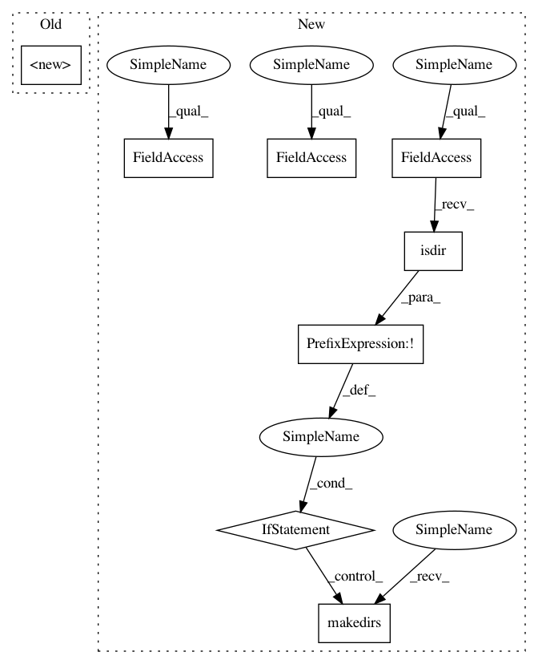

297e14732849f2b8025de6e2bf80ac05cab82b44,src/gluonnlp/data/corpora/google_billion_word.py,GBWStream,__init__,#GBWStream#Any#Any#Any#Any#Any#,133
Before Change
"0a8e2b7496ba0b5c05158f282b9b351356875445")}
self._vocab_file = ("gbw-ebb1a287.vocab",
"ebb1a287ca14d8fa6f167c3a779e5e7ed63ac69f")
super(GBWStream, self).__init__("gbw", segment, bos, eos, skip_empty, root)
@property
def vocab(self):
path = self._get_vocab()
After Change
def __init__(self, segment="train", skip_empty=True, bos=None, eos=EOS_TOKEN,
root=os.path.join(get_home_dir(), "datasets", "gbw")):
root = os.path.expanduser(root)
if not os.path.isdir(root):
os.makedirs(root)
self._root = root
self._dir = os.path.join(root, "1-billion-word-language-modeling-benchmark-r13output")
self._namespace = "gluon/dataset/gbw"
subdir_name, pattern, data_hash = self._data_file[segment]
self._subdir = os.path.join(self._dir, subdir_name)
self._file_pattern = os.path.join(self._subdir, pattern)
self._data_hash = data_hash
self._get_data()
In pattern: SUPERPATTERN
Frequency: 3
Non-data size: 8
Instances
Project Name: dmlc/gluon-nlp
Commit Name: 297e14732849f2b8025de6e2bf80ac05cab82b44
Time: 2019-11-27
Author: lausen@amazon.com
File Name: src/gluonnlp/data/corpora/google_billion_word.py
Class Name: GBWStream
Method Name: __init__
Project Name: vatlab/SoS
Commit Name: e15942dd6415dae2d97cfa583ab29f36f655e733
Time: 2016-12-29
Author: ben.bog@gmail.com
File Name: sos/sos_step.py
Class Name: Base_Step_Executor
Method Name: prepare_runtime
Project Name: dmlc/gluon-nlp
Commit Name: 297e14732849f2b8025de6e2bf80ac05cab82b44
Time: 2019-11-27
Author: lausen@amazon.com
File Name: src/gluonnlp/data/corpora/google_billion_word.py
Class Name: GBWStream
Method Name: __init__
Project Name: vatlab/SoS
Commit Name: 9e36cd48e96f8323726e6808a689a426761b1237
Time: 2016-12-29
Author: ben.bog@gmail.com
File Name: sos/sos_step.py
Class Name: Base_Step_Executor
Method Name: prepare_runtime